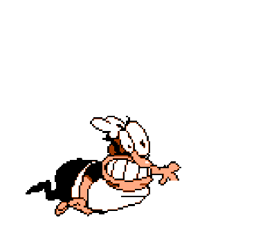

<ion-progress-bar type="indeterminate"></ion-progress-bar>
<ion-content [fullscreen]="true" class="background">
	<link rel="preconnect" href="https://fonts.googleapis.com">
	<link rel="preconnect" href="https://fonts.gstatic.com" crossorigin>
	<link href="https://fonts.googleapis.com/css2?family=Ubuntu:ital,wght@0,300;0,400;0,500;0,700;1,300;1,400;1,500;1,700&display=swap" rel="stylesheet">
	<div class="contenedor">
		<h1>Volviendo a tu sesion</h1>
		<h2>Espera un momento...</h2>
		
	</div>

	<ion-button name="404" fill="clear" size="small" (click)="cuatrocerocuatro()">.</ion-button>
</ion-content>